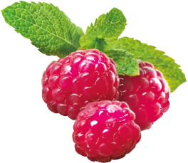
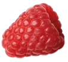
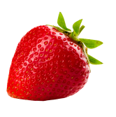
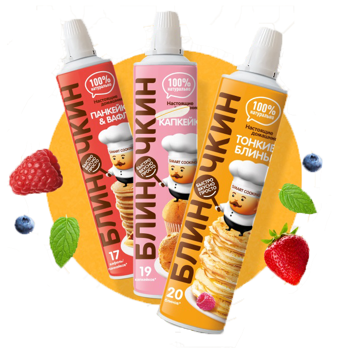

Настоящие домашние
Готовить теперь легко, быстро и интересно!
Узнать подробнее
  

Никакой грязи на кухне при замешивании - уделите больше времени родным и себе!
Экономия времени по технологии «Smart Cooking» - творите и развлекайтесь во время приготовления еды!
Надолго сохраняет полезные свойства и качества теста - готовьте вкусные завтраки и обеды!
В составе только натуральные ингридиенты - готовое блюдо не отличается по вкусу от сделанного по традиционному рецепту.
Стандартизация по системе HACCP - безопасность и контроль на каждом этапе создания.
Продукция производится на автоматизированной линии в России
Второй слайд